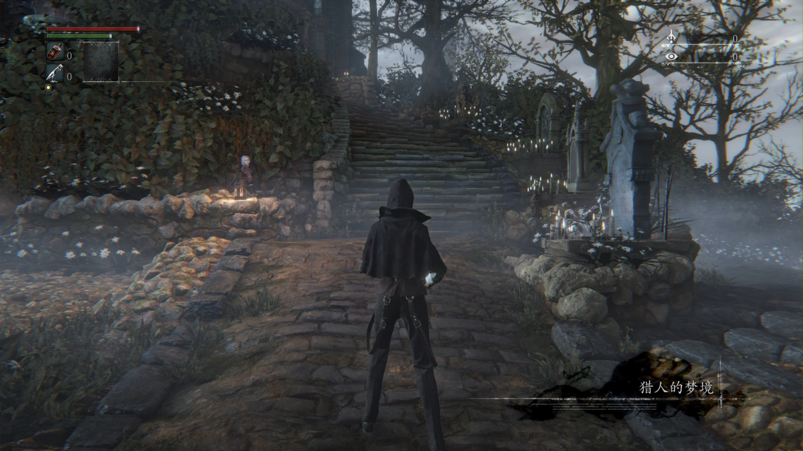

2022年萌新玩远古游戏《血源诅咒》被虐哭

病房一栋
没玩过《血源诅咒》的我听过关于它最多的话题是“为什么索尼还不给血源更新60帧啊？”“这是最注重细节的魂类游戏，枪反、滑步爽翻了”，听多了它的传闻，这款久负盛名的远古游戏成功引起了我的注意。
众所周知远古游戏的一大特点就是难度高、操作不人性化，但是不怕啊，我可是经过《老头环》《恶魂》锻炼过身经百战的魂游达人！
等不及60帧了，我现在就要冲血源！
创建人物，经过一段云里雾里从来看不懂的剧情，我就来到了病房一栋，刚才病床上起来我就感觉不对劲，走过了一个房间感觉更加不对劲，直到我看到一个半血正在地上吃尸体的大灰狼才意识到：我这个角色赤手空拳啊？！难道血缘和老头环恶魂不一样这儿主讲打拳的？要不其他玩家怎么说枪反呢，枪都是反拿着的，意思是我有枪都不射，就要反拿着挑衅，等敌人过来打拳，想到这里我豁然开朗。那行吧，在这个游戏我要当拳皇！
趁大灰狼不注意，跑上去就给它一记左勾拳右勾拳，一句惹毛我的人有危险，PiuPiuPiu，震惊的发现，这打拳伤害刮痧啊！
在我还在为拳皇梦破灭震惊的时候，大灰狼回头一爪子刮掉了我半管血，这可怎么打啊！
被大灰狼打死后就来到了猎人梦境，往前走几步，我瞎按了几下又被稀里糊涂传送到了病房一栋，走几步又要打大灰狼。
经过一阵周旋，发现了可以按X闪避到大灰狼的身后抽它PP，刚开始不熟悉被扑倒咬死抓死了几次。大约七八次后，我成功的掌握了抽PP的技巧，沉着冷静的抽了三分钟终于抽死它了，这一刻心情极为舒畅。
雅南中部
出了门，见到一个举着火把提着大砍刀的亚楠人民，还没来得及打招呼，他就冲着过来要砍我。这就是传说中的热情好客的亚楠人民？
抽了五分钟终于抽死他了，往前走几步又看到了两个亚楠人民从地上爬起来，当场就快把我吓尿了，急忙爬一个梯子逃掉。
这时我意识到没有武器一定是不合理的，经过朋友garyliaobest友情提示，在猎人梦境找到了2把武器，此时此刻我又抖起来了。空手揍死大灰狼的我现在左手枪右手刀，这还怎么输？
很快，我就遇到了一大群聚集在篝火周围的亚楠人民，还没来得及数清楚有多少个，一大帮人就乌央乌央的涌了过来，我转身就跑可惜还是不熟悉路况，陷入亚楠人民群众汪洋大海之中的主角很快就牺牲了。
多打了几次，采用逐一勾引，分批消灭的战术，重整旗鼓的我很快就清空了大街上的亚楠人，有个一直在锤门怪吓人的大胖子也被我几下砍死，出了口恶气。
这时已经打了半个小时了，转来转去，我突然看到了2个大灰狼，感觉特别不对劲，因为我现在身怀巨款啊，不能轻易死啊。不行，我得去群里问问。
经过DENGWKANG_CN友情提示，两个大灰狼身后就是存档点。
越是知道现在是关键点越慌，CharmLau-66提示我卡门打法，可我不熟悉地形，不知道卡哪个门，稀里糊涂就被两个大灰狼打死了。
结果几千魂全丢了，亚楠人民全体复活。
辛辛苦苦老半天，一夜回到解放前！
一瞬间我想怒删了这沙雕游戏！
可还是冷静下来了，重新再来我不一个个打亚楠人，一路跑酷直奔BOSS，经过了四五次不熟悉路况被群殴死之后，这雅南中部的地形被我彻底摸清楚了，敌人没发现的时候我悠哉悠哉散步，发现了我就拔腿狂奔，该等敌人下楼的时候就乖乖等着……最后一次毫发无伤的跑到了BOSS前。
BOSS是个特大灰狼，倒是没什么难度，CharmLau-66和DENGWKANG_CN提示它怕火，可我还没弄清楚怎么使用这些道具，一直躲猫猫平A，也顺利打死它了。
总结：这种远古游戏有点蓄意为难玩家，前期不问朋友武器都不容易找到；雅南中部存档点太远了，非常不人性化，新人恐怕容易劝退。不过好在打过了很有成就感，很爽。
本博客所有文章除特别声明外，均采用 CC BY-SA 4.0 协议 ，转载请注明出处！